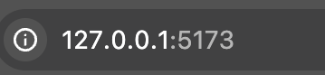
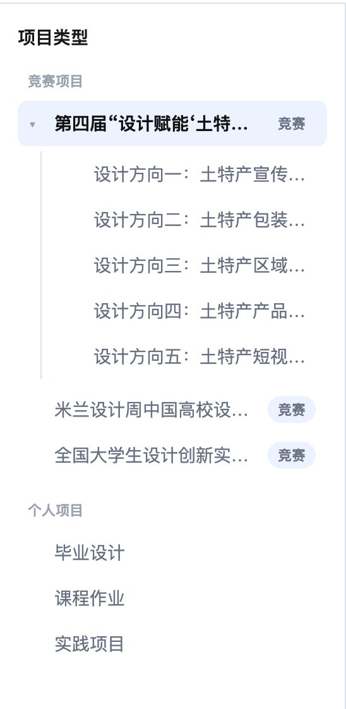
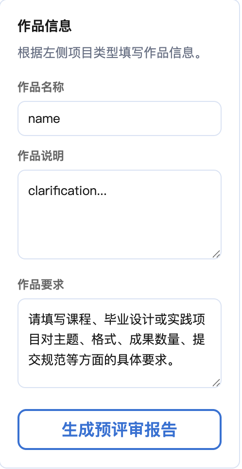
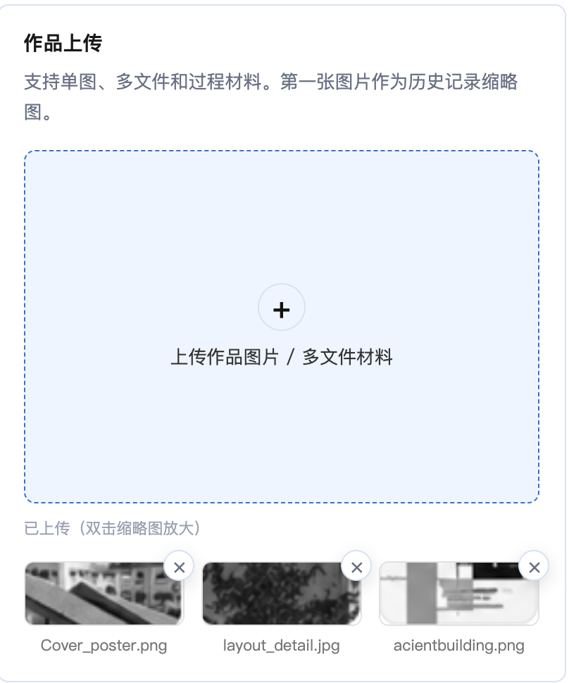
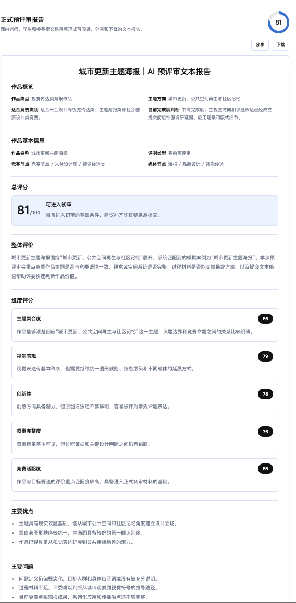
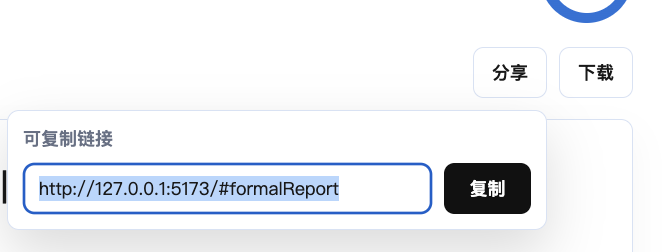

5 分钟快速上手
本页说明如何运行当前静态 Demo，并完成一次从选择项目语境到生成 Mock 预评审报告的演示流程。
1. 打开工作台
项目使用 Vite，建议通过本地服务器访问，不建议直接使用 file:// 打开。
npm install
npm run dev默认地址为：
http://127.0.0.1:5173/
2. 选择项目语境
在左侧“项目类型”导航中选择竞赛项目、竞赛方向或个人项目。当前默认选中公益赛道。
- 竞赛项目：包含公益赛道、米兰设计周、全国大学生设计创新实践大赛。
- 公益赛道：包含 5 个设计方向。
- 个人项目：包含毕业设计、课程作业、实践项目。

3. 填写作品信息
竞赛项目下填写作品名称和作品说明。切换到个人项目后，表单会额外显示作品要求字段。
当前表单信息只参与本地 Mock 报告生成，不会上传到服务器。

4. 上传作品材料
在“作品上传”区域点击上传框，或把文件拖入上传区域。图片文件会生成本地缩略图，非图片文件会显示扩展名占位。
- 支持多文件追加。
- 支持双击缩略图打开预览。
- 支持删除文件和拖拽排序。

5. 生成预评审报告
点击“生成预评审报告”后，前端会基于当前表单和分类语境匹配本地 Mock 案例，生成结构化报告，并在右侧历史记录中新增记录。

6. 保存或分享报告
报告操作区提供分享、Markdown 下载和打印入口。当前“下载 PDF”实际调用浏览器打印流程，不是程序化生成 PDF 文件。
